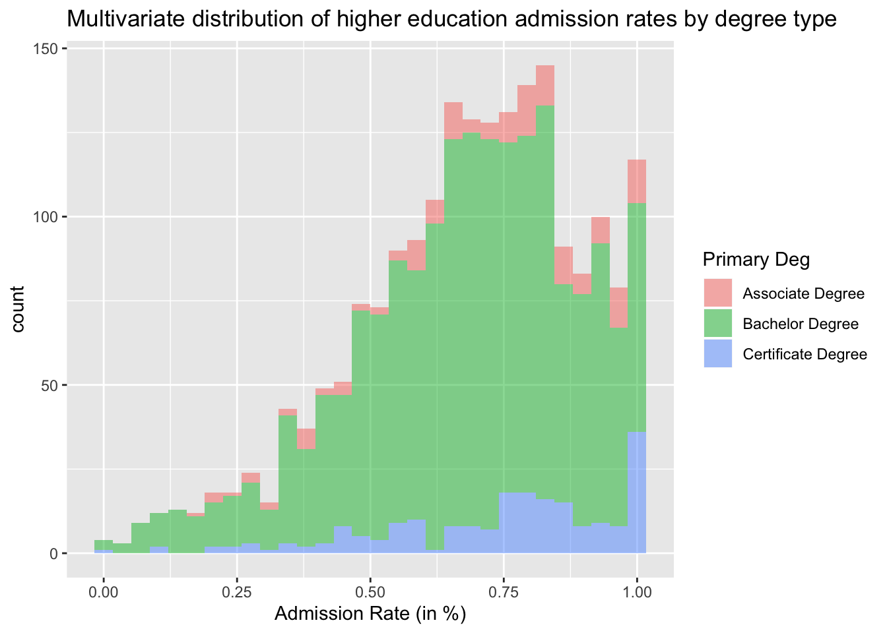
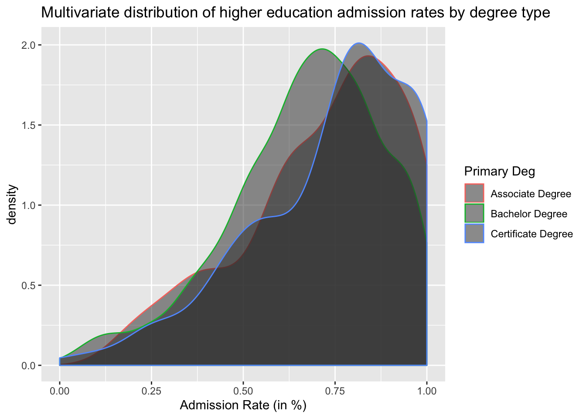
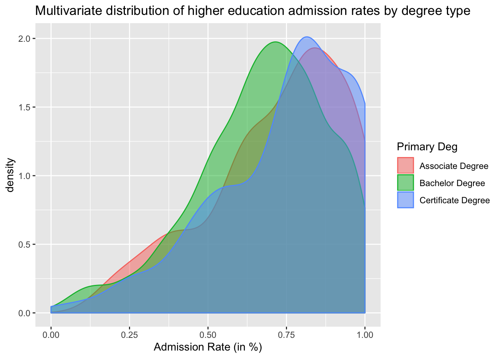
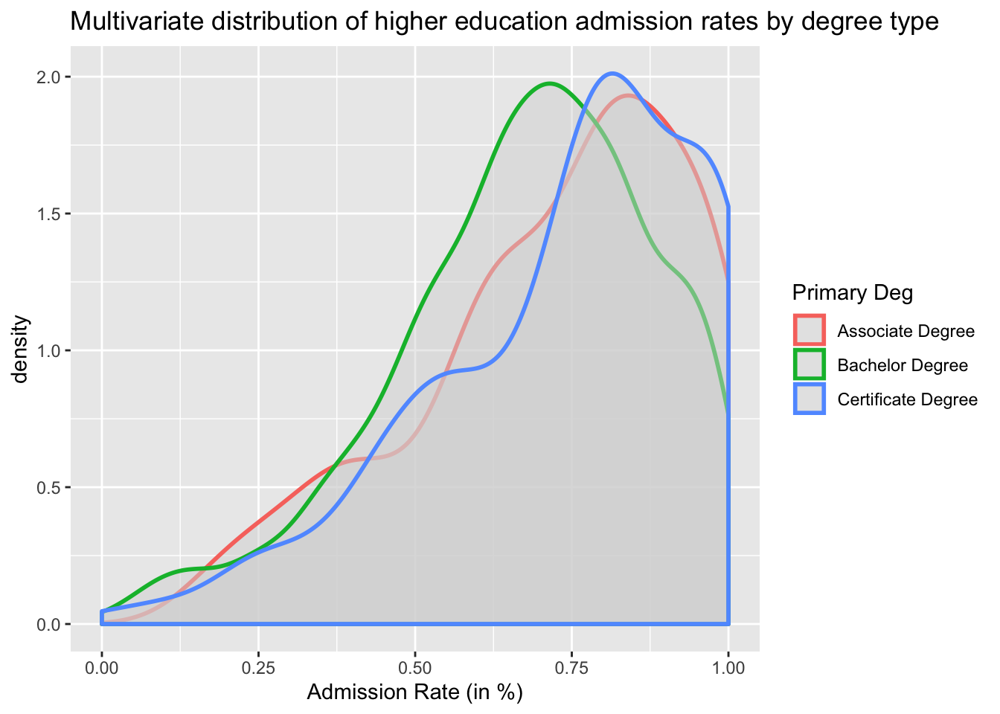
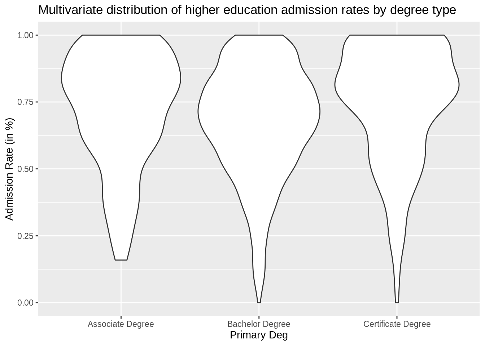
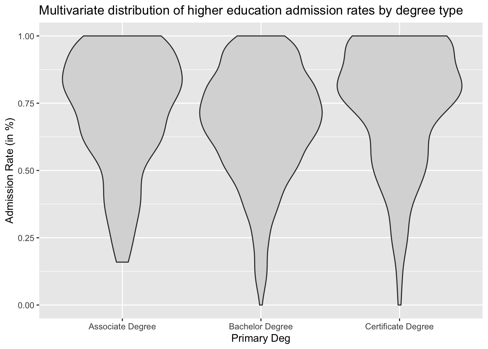
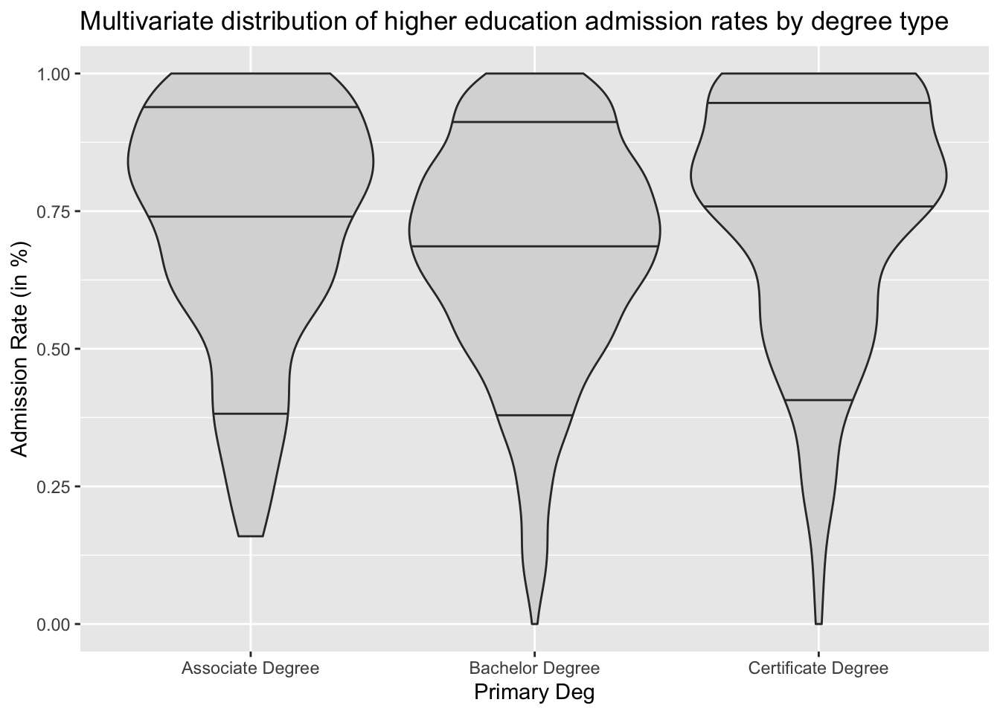
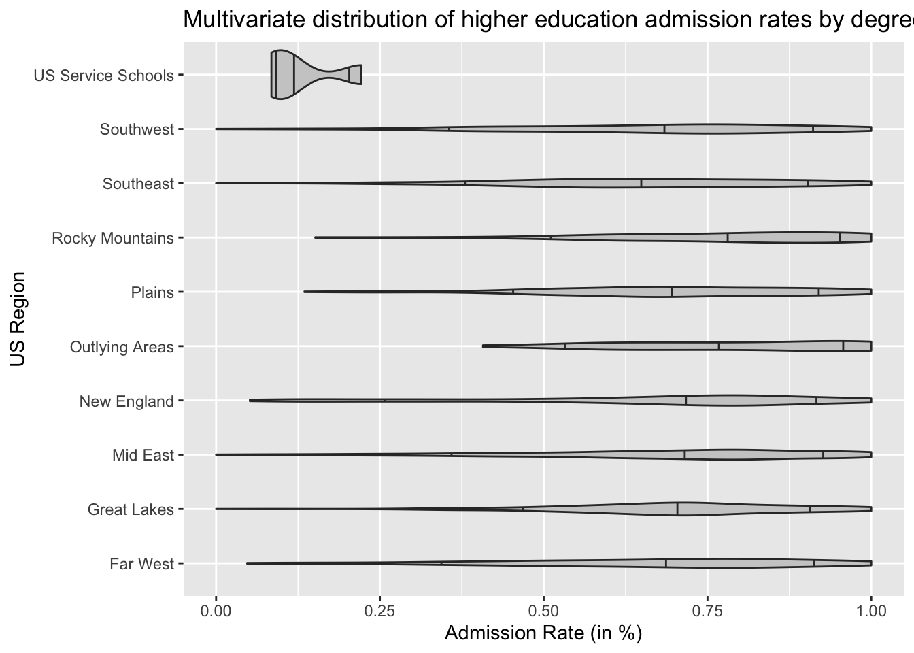
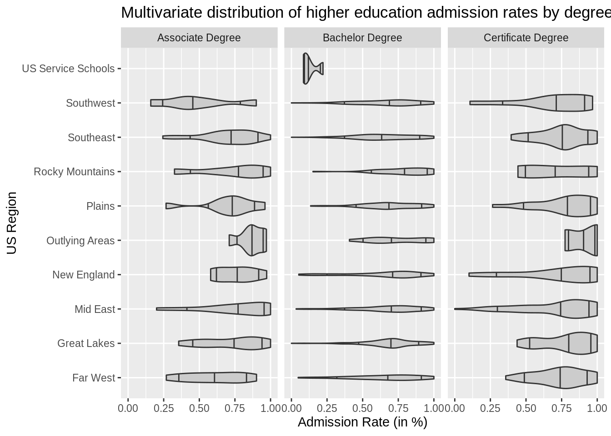

Chapter 4 Multivariate Visualization
library(tidyverse)
library(ggformula)
library(statthink)
# Import data
colleges <- read_csv(
file = "https://raw.githubusercontent.com/lebebr01/statthink/master/data-raw/College-scorecard-clean.csv",
guess_max = 10000
)Real world data are never as simple exploring a distribution of a single variable, particularly when trying to understand individual variation. In most cases things interact, move in tandem, and many phenomena help to explain the variable of interest. For example, when thinking about admission rates, what may be some important factors that would explain some of the reasons why higher education institutions differ in their admission rates? Take a few minutes to brainstorm some ideas.
gf_histogram(~ adm_rate, data = colleges, bins = 30, fill = ~ preddeg) %>%
gf_labs(x = 'Admission Rate (in %)',
title = 'Multivariate distribution of higher education admission rates by degree type',
fill = "Primary Deg")
Often density plots are easier to visualize when there are more than one group. To plot more than one density curve, we need to specify the color argument instead of fill.
gf_density(~ adm_rate, data = colleges, color = ~ preddeg) %>%
gf_labs(x = 'Admission Rate (in %)',
title = 'Multivariate distribution of higher education admission rates by degree type',
color = "Primary Deg")
gf_density(~ adm_rate, data = colleges, fill = ~ preddeg) %>%
gf_labs(x = 'Admission Rate (in %)',
title = 'Multivariate distribution of higher education admission rates by degree type',
fill = "Primary Deg")gf_density(~ adm_rate, data = colleges, fill = ~ preddeg, color = ~ preddeg) %>%
gf_labs(x = 'Admission Rate (in %)',
title = 'Multivariate distribution of higher education admission rates by degree type',
color = "Primary Deg",
fill = "Primary Deg")
gf_density(~ adm_rate, data = colleges, color = ~ preddeg, fill = 'gray85', size = 1) %>%
gf_labs(x = 'Admission Rate (in %)',
title = 'Multivariate distribution of higher education admission rates by degree type',
color = "Primary Deg") ## Violin Plots
Violin plots are another way to make comparisons of distributions across groups. Violin plots are also easier to show more groups on a single graph. Violin plots are density plots that are mirrored to be fully enclosed. Best to explore with an example.ArithmeticError
gf_violin(adm_rate ~ preddeg, data = colleges) %>%
gf_labs(y = 'Admission Rate (in %)',
title = 'Multivariate distribution of higher education admission rates by degree type',
x = "Primary Deg")
Aesthetically, these figures are a bit more pleasing to look at if they include a light fill color. This is done similar to the density plots shown above with the fill = argument.ArithmeticError
gf_violin(adm_rate ~ preddeg, data = colleges, fill = 'gray85') %>%
gf_labs(y = 'Admission Rate (in %)',
title = 'Multivariate distribution of higher education admission rates by degree type',
x = "Primary Deg")
Adding quantiles are useful to aid in the comparison with the violin plots. These can be added with the draw_quantiles argument.
gf_violin(adm_rate ~ preddeg, data = colleges, fill = 'gray85', draw_quantiles = c(.1, .5, .9)) %>%
gf_labs(y = 'Admission Rate (in %)',
title = 'Multivariate distribution of higher education admission rates by degree type',
x = "Primary Deg") ### Violin Plots with many groups
Many groups are more easily shown in the violin plot framework.
With many groups, it is often of interest to put the long x-axis labels representing each group on the y-axis so that it reads the correct direction and the labels do not run into each other. This can be done with the gf_refine() function with coord_flip().
gf_violin(adm_rate ~ region, data = colleges, fill = 'gray80', draw_quantiles = c(.1, .5, .9)) %>%
gf_labs(y = 'Admission Rate (in %)',
title = 'Multivariate distribution of higher education admission rates by degree type',
x = "US Region") %>%
gf_refine(coord_flip())
4.1 Facetting
Facetting is another way to explore distributions of two or more variables.
gf_violin(adm_rate ~ region, data = colleges, fill = 'gray80', draw_quantiles = c(.1, .5, .9)) %>%
gf_labs(y = 'Admission Rate (in %)',
title = 'Multivariate distribution of higher education admission rates by degree type',
x = "US Region") %>%
gf_refine(coord_flip()) %>%
gf_facet_wrap(~ preddeg)